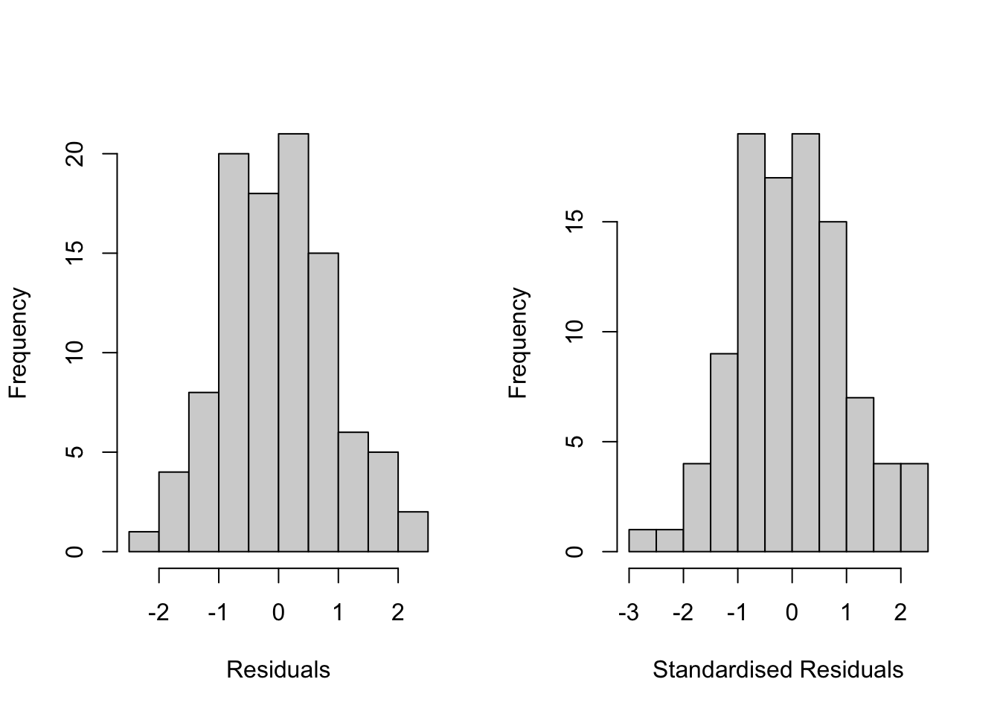
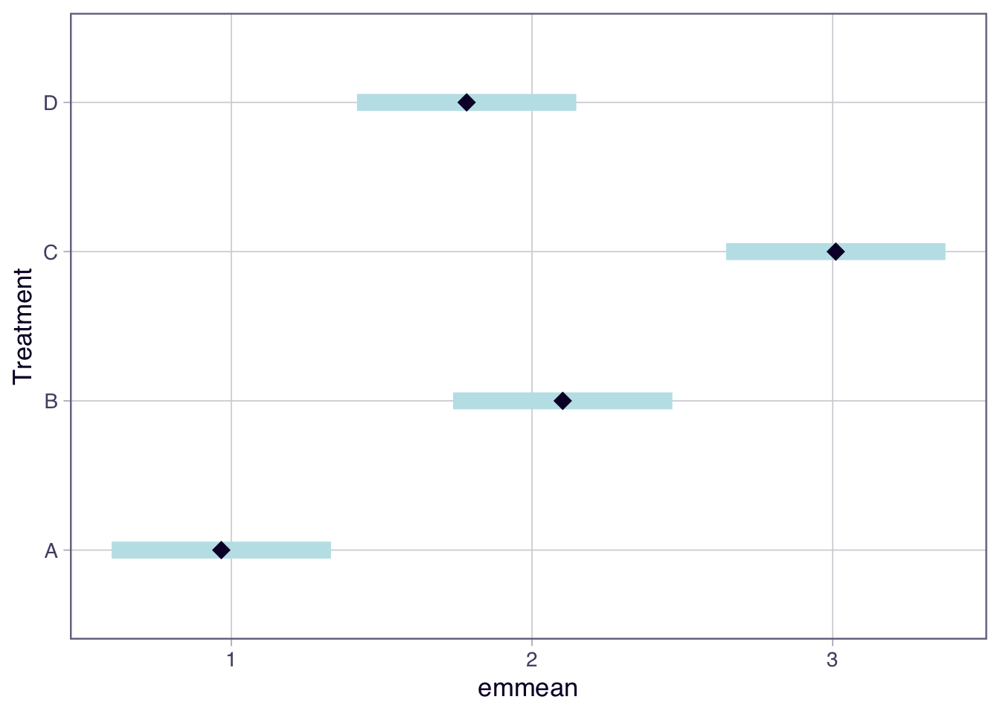
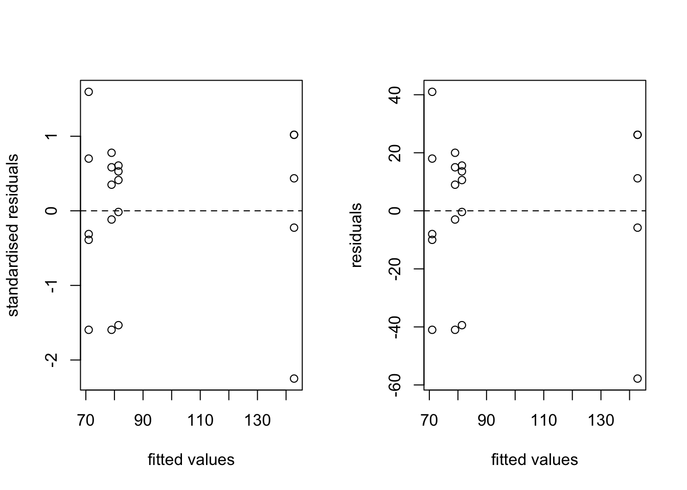
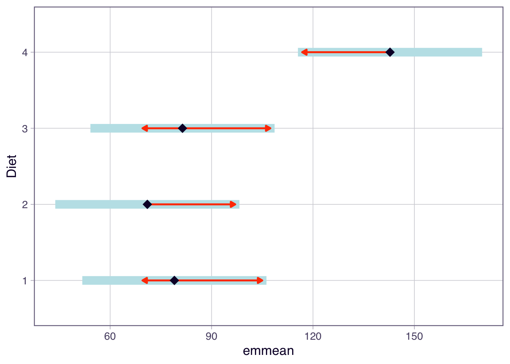

library(moments) # for some summary statisticsWeek 4 lecture code and notes
ENVX2001 Applied Statistical Methods
Load packages
First lets load some helpful packages
Synthetic Example
First we will generate some synthetic data to illustrate the concepts of ANOVA and the assumptions of the model. Here you will see the workflow for fitting an ANOVA model, checking the assumptions and then performing post-hoc tests.
Let’s generate some synthetic data. We will generate data from 4 treatments with different means. This will help illustrate the assumptions of the ANOVA model.
set.seed(123) # for reproducibiity
## Generate data
rep <- 25
Treatment <- as.factor(rep(LETTERS[1:4], each = rep))
mu <- rep(c(1, 2, 3, 1.5), each = rep)
y <- exp(rnorm(4 * rep, mu, 1))Raw data exploration
It is always a good idea to explore the raw data before fitting any models. This can help identify any potential issues with the data that may need to be addressed before fitting the model.
Tip
par(mfrow = c(1,2)) is used to set the layout of the plots. The first number is the number of rows and the second number is the number of columns. par(mfrow = c(1,1)) is used to reset the layout to the default.
par(mfrow = c(1, 2))
plot(y ~ Treatment)
hist(y, main = "", xlab = "Y")
par(mfrow = c(1, 1))Already we see there could be issues with the data. The data is right skewed and the variance is not constant across the treatments. This is a common issue with ecological data and is why we often need to transform the data before fitting the model.
Generate some summary statistics for the data
## Summary stats by treatment
tapply(y, Treatment, median) A B C D
2.185894 6.945461 21.178875 5.690122 tapply(y, Treatment, mean) A B C D
4.113848 12.234283 31.387065 8.418323 tapply(y, Treatment, skewness) A B C D
1.744465 2.728535 2.320537 2.362395 tapply(y, Treatment, kurtosis) A B C D
4.807209 11.564391 8.460269 9.181076 The above summary statistics show that the data is right skewed and has a high kurtosis. This is not ideal for ANOVA and is consistent with the above plots.
Tip
The skewness and kurtosis are measures of the shape of the distribution. Skewness measures the asymmetry of the distribution and kurtosis measures the thickness of the tails of the distribution.
Fit ANOVA
Fit the ANOVA model to the data. This is done using the aov function in R. The model is fitted using the formula y ~ Treatment where y is the response variable and Treatment is the factor variable.
It seems weird to fit the model to the data before checking the assumptions, but we need to calculate the residuals from the model to use to test our assumptions. We now focus on the residuals of the model, not the raw data.
y.aov <- aov(y ~ Treatment)Check assumptions
The assumptions of the ANOVA model are that the residuals are normally distributed and have constant variance. We can check these assumptions using a variety of diagnostic plots and tests.
There are two main schools of thought on how to check these assumptions. The first is to check the residuals of the model and use formal statistical tests (an older approach), the second is to use graphical approaches. The more statistical tests you do the greater the chance of a type 1 error - more on that when we get to post-hoc tests.
Tip
The residuals are the difference between the observed values and the predicted values from the model.
Formal statistical tests
Here we will use the Shapiro-Wilk test to test the normality of the residuals. We will also use the Bartlett test to test the homogeneity of variance. As a comparison, we will also use the raw data to test for normality, but this isn’t the best approach (see tutorial for more).
Normality tests
Shapiro-Wilk test on the raw data. Note how we need to use the tapply function to apply the test to each treatment level. If you have lots of treatments or a more complex model you may need to use a different approach.
tapply(y, Treatment, shapiro.test)$A
Shapiro-Wilk normality test
data: X[[i]]
W = 0.71793, p-value = 1.283e-05
$B
Shapiro-Wilk normality test
data: X[[i]]
W = 0.69122, p-value = 5.566e-06
$C
Shapiro-Wilk normality test
data: X[[i]]
W = 0.71734, p-value = 1.258e-05
$D
Shapiro-Wilk normality test
data: X[[i]]
W = 0.72923, p-value = 1.85e-05Graphical approach
par(mfrow = c(2, 2))
tapply(y, Treatment, hist)
$A
$breaks
[1] 0 2 4 6 8 10 12 14 16 18
$counts
[1] 11 6 4 0 1 0 1 1 1
$density
[1] 0.22 0.12 0.08 0.00 0.02 0.00 0.02 0.02 0.02
$mids
[1] 1 3 5 7 9 11 13 15 17
$xname
[1] "X[[i]]"
$equidist
[1] TRUE
attr(,"class")
[1] "histogram"
$B
$breaks
[1] 0 10 20 30 40 50 60 70
$counts
[1] 14 8 2 0 0 0 1
$density
[1] 0.056 0.032 0.008 0.000 0.000 0.000 0.004
$mids
[1] 5 15 25 35 45 55 65
$xname
[1] "X[[i]]"
$equidist
[1] TRUE
attr(,"class")
[1] "histogram"
$C
$breaks
[1] 0 20 40 60 80 100 120 140 160
$counts
[1] 12 8 2 1 1 0 0 1
$density
[1] 0.024 0.016 0.004 0.002 0.002 0.000 0.000 0.002
$mids
[1] 10 30 50 70 90 110 130 150
$xname
[1] "X[[i]]"
$equidist
[1] TRUE
attr(,"class")
[1] "histogram"
$D
$breaks
[1] 0 5 10 15 20 25 30 35 40
$counts
[1] 11 7 4 1 1 0 0 1
$density
[1] 0.088 0.056 0.032 0.008 0.008 0.000 0.000 0.008
$mids
[1] 2.5 7.5 12.5 17.5 22.5 27.5 32.5 37.5
$xname
[1] "X[[i]]"
$equidist
[1] TRUE
attr(,"class")
[1] "histogram"par(mfrow = c(1, 1))Shapiro-Wilk test on the residuals of the model
shapiro.test(resid(y.aov))
Shapiro-Wilk normality test
data: resid(y.aov)
W = 0.66003, p-value = 6.934e-14Much easier! The residuals are not normally distributed, but we still need to check the variance.
Graphical approach
par(mfrow = c(1, 2))
hist(y.aov$resid, main = "", xlab = "Residuals")
hist(rstandard(y.aov), main = "", xlab = "Standardised Residuals")
par(mfrow = c(1, 1))Better approach is to use QQplots. This is a graphical approach to check the normality of the residuals. The residuals should fall on the line if they are normally distributed.
par(mfrow = c(1, 2))
qqnorm(rstandard(y.aov)) # standarised residuals
qqline(rstandard(y.aov))
qqnorm(resid(y.aov)) # residuals
qqline(resid(y.aov))
par(mfrow = c(1, 1))
Tip
The standardised residuals are the residuals divided by the standard deviation of the residuals. This is a way to standardise the residuals so they are easier to interpret. You can use either the residuals or the standardised residuals to check the assumptions. Note how the y-axis is different between the two plots.
skewness(rstandard(y.aov))[1] 3.712531Note the skewness of the residuals is 3.7 which is very high. This is consistent with the right skewed data we generated.
Equal variance tests
Graphical approach
par(mfrow = c(1, 2))
plot(fitted(y.aov), rstandard(y.aov), xlab = "fitted values", ylab = "standardised residuals")
abline(0, 0)
plot(fitted(y.aov), resid(y.aov), xlab = "fitted values", ylab = "residuals")
abline(0, 0)
par(mfrow = c(1, 1))
Tip
The residuals should be homoscedastic, meaning they have constant variance across the range of the fitted values. This is an assumption of the ANOVA model. We are looking for no pattern in the residuals as the fitted values increase. Similar to the QQplot, you can use the residuals or standarised residuals. Note how the y-axis is different between the two plots.
tapply(y, Treatment, sd) A B C D
4.457697 13.027553 34.078634 8.354337 The standard deviations of the residuals are not constant across the treatments. This is consistent with the right skewed data we generated.
Formal statistical test
Equal variance tests. These are ok for simple models, but can be problematic for more complex models. The Bartlett test is used to test the homogeneity of variance across the treatments. Recommended to use the graphical approach above.
bartlett.test(rstandard(y.aov) ~ Treatment)
Bartlett test of homogeneity of variances
data: rstandard(y.aov) by Treatment
Bartlett's K-squared = 95.877, df = 3, p-value < 2.2e-16The Bartlett test is significant, indicating that the variances are not equal across the treatments. This is consistent with the graphical approach.
Assumptions not met - now what?
The assumptions of the ANOVA model are not met. The residuals are not normally distributed and the variance is not constant across the treatments. This is consistent with the right skewed data we generated.
So we need to transform the data to meet the assumptions of the model. A common transformation is the log transformation. This is often used for right skewed data.
The workflow is the same as above, but we will use the transformed data. If the log transformation doesn’t work, you can try other transformations or use a non-parametric test. You need to repeat the above steps for each transformation.
Fit ANOVA
Fit the ANOVA model to the transformed data. This is done using the aov function in R. The model is fitted using the formula log(y) ~ Treatment where log(y) is the response variable and Treatment is the factor variable.
y.aov <- aov(log(y) ~ Treatment)Data exploration on the transformed data
## Raw data
par(mfrow = c(1, 2))
plot(log(y) ~ Treatment)
hist(log(y), main = "", xlab = "Y")
par(mfrow = c(1, 1))skewness(y.aov$residuals)[1] 0.1042677Looking better! The skewness of the residuals is now 0.1 which is much better than the 3.7 we had before.
Check assumptions
Normality tests
Graphical approach
par(mfrow = c(1, 2))
hist(y.aov$resid, main = "", xlab = "Residuals")
hist(rstandard(y.aov), main = "", xlab = "Standardised Residuals")
par(mfrow = c(1, 1))Histograms of the residuals and standardised residuals show the residuals are now normally distributed.
par(mfrow = c(1, 2))
qqnorm(rstandard(y.aov))
qqline(rstandard(y.aov))
qqnorm(resid(y.aov))
qqline(resid(y.aov))
par(mfrow = c(1, 1))The QQplots show the residuals are now normally distributed.
Equal variance tests
par(mfrow = c(1, 2))
plot(fitted(y.aov), rstandard(y.aov), xlab = "fitted values", ylab = "standardised residuals")
abline(0, 0)
plot(fitted(y.aov), resid(y.aov), xlab = "fitted values", ylab = "residuals")
abline(0, 0)
par(mfrow = c(1, 1))There are no patterns in the residuals as the fitted values increase, indicating the variance is constant across the treatments.
tapply(log(y), Treatment, sd) A B C D
0.9467324 0.9188734 0.9724214 0.8304201 The standard deviations of the residuals are now constant across the treatments.
ANOVA results
Now that the assumptions of the ANOVA model are met, we can look at the ANOVA results.
summary(y.aov) Df Sum Sq Mean Sq F value Pr(>F)
Treatment 3 53.53 17.844 21.14 1.34e-10 ***
Residuals 96 81.02 0.844
---
Signif. codes: 0 '***' 0.001 '**' 0.01 '*' 0.05 '.' 0.1 ' ' 1The ANOVA results show that the treatment has a significant effect on the response variable. We don’t know what is driving the result, so we need to do post-hoc tests to determine which treatments are different from each other.
Post-hoc test
Again there are two main schools of thought on how to do post-hoc tests. The first is to use formal statistical tests, the second is to use graphical approaches. The more statistical tests you do the greater the chance of a type 1 error.
Formal statistical tests There are many post-hoc tests available to determine which treatments are different from each other. The most common is the Tukey HSD test. This is a conservative test that controls the family-wise error rate. There are other tests available, but they are less conservative and can lead to more type 1 errors.
We will illustrate two functions in R to do the Tukey HSD test. The first is the TukeyHSD function and the second is the emmeans function. The emmeans function is more flexible and can be used for more complex models.
TukeyHSD(y.aov) Tukey multiple comparisons of means
95% family-wise confidence level
Fit: aov(formula = log(y) ~ Treatment)
$Treatment
diff lwr upr p adj
B-A 1.1354677 0.4560893 1.8148461 0.0001824
C-A 2.0435713 1.3641929 2.7229498 0.0000000
D-A 0.8159058 0.1365274 1.4952842 0.0118471
C-B 0.9081036 0.2287252 1.5874821 0.0039507
D-B -0.3195619 -0.9989403 0.3598165 0.6095421
D-C -1.2276655 -1.9070440 -0.5482871 0.0000461The above results show that all treatment levels are different from each other, except D and C. The first column diff is the difference between the means, the second column lwr is the lower bound of the confidence interval and the third column upr is the upper bound of the confidence interval. The last column p adj is the p-value adjusted for multiple comparisons.
Tip
Using the emmeans package (recommended way) to do the Tukey HSD test. This is more flexible and can be used for more complex models.
The emmeans function calculates the estimated marginal means for each treatment level and then calculates the differences between the means. The pairwise argument is used to specify which treatments to compare. The adjust argument is used to specify the method to adjust for multiple comparisons. The default is the Tukey HSD test.
library(emmeans)Welcome to emmeans.
Caution: You lose important information if you filter this package's results.
See '? untidy'emmeans(y.aov, pairwise ~ Treatment)$emmeans
Treatment emmean SE df lower.CL upper.CL
A 0.967 0.184 96 0.602 1.33
B 2.102 0.184 96 1.737 2.47
C 3.010 0.184 96 2.646 3.37
D 1.783 0.184 96 1.418 2.15
Results are given on the log (not the response) scale.
Confidence level used: 0.95
$contrasts
contrast estimate SE df t.ratio p.value
A - B -1.135 0.26 96 -4.370 0.0002
A - C -2.044 0.26 96 -7.865 <.0001
A - D -0.816 0.26 96 -3.140 0.0118
B - C -0.908 0.26 96 -3.495 0.0040
B - D 0.320 0.26 96 1.230 0.6095
C - D 1.228 0.26 96 4.725 <.0001
Results are given on the log (not the response) scale.
P value adjustment: tukey method for comparing a family of 4 estimates The above results show the same results as the TukeyHSD function. There are two tables in the output. The first table shows the estimated marginal means for each treatment level. The second table shows the differences between the means and the p-values adjusted for multiple comparisons. See how estimate is the same a diff in the TukeyHSD output.
Graphical approach
plot(emmeans(y.aov, pairwise ~ Treatment))
The above plot shows the differences between the means and the confidence intervals. The confidence intervals that do not cross zero are significantly different from each other.
Tip
The graphical approach is a good way to visualise the differences between the means. It is often easier to interpret than the tables of results. However it is up to use to decide which approach to use. Just justify it and often a combination of both helps you understand the results better until you get more experience.
Example data - chicken weights
Read in data and check structure
chicks <- read.csv("data/Chick weights.csv")
head(chicks) # first 6 records Diet WtGain
1 1 99
2 1 88
3 1 76
4 1 38
5 1 94
6 2 61We need to check the structure of the data to make sure it is in the correct format. The Diet variable is a factor variable, so we need to convert it to a factor using the as.factor function. The WtGain variable is a numeric variable, so we don’t need to do anything to it.
str(chicks)'data.frame': 20 obs. of 2 variables:
$ Diet : int 1 1 1 1 1 2 2 2 2 2 ...
$ WtGain: int 99 88 76 38 94 61 112 30 89 63 ...chicks$Diet <- as.factor(chicks$Diet)
str(chicks)'data.frame': 20 obs. of 2 variables:
$ Diet : Factor w/ 4 levels "1","2","3","4": 1 1 1 1 1 2 2 2 2 2 ...
$ WtGain: int 99 88 76 38 94 61 112 30 89 63 ...Data exploration
summary stats
Calculate the summary statistics for the data. This will help us understand the data better and identify any potential issues.
summary(chicks) Diet WtGain
1:5 Min. : 30.00
2:5 1st Qu.: 72.75
3:5 Median : 90.50
4:5 Mean : 93.55
3rd Qu.:102.25
Max. :169.00 summary(chicks$WtGain) Min. 1st Qu. Median Mean 3rd Qu. Max.
30.00 72.75 90.50 93.55 102.25 169.00 Lets have a look at the means, sd, skewness and kurtosis for the data. This will help us understand the shape of the data and identify any potential issues.
aggregate(WtGain ~ Diet, mean, data = chicks) Diet WtGain
1 1 79.0
2 2 71.0
3 3 81.4
4 4 142.8aggregate(WtGain ~ Diet, sd, data = chicks) Diet WtGain
1 1 24.47448
2 2 31.02418
3 3 22.87575
4 4 34.90272aggregate(WtGain ~ Diet, summary, data = chicks) Diet WtGain.Min. WtGain.1st Qu. WtGain.Median WtGain.Mean WtGain.3rd Qu.
1 1 38.0 76.0 88.0 79.0 94.0
2 2 30.0 61.0 63.0 71.0 89.0
3 3 42.0 81.0 92.0 81.4 95.0
4 4 85.0 137.0 154.0 142.8 169.0
WtGain.Max.
1 99.0
2 112.0
3 97.0
4 169.0# Summary stats by treatment
library(moments)
tapply(chicks$WtGain, chicks$Diet, median) 1 2 3 4
88 63 92 154 tapply(chicks$WtGain, chicks$Diet, mean) 1 2 3 4
79.0 71.0 81.4 142.8 tapply(chicks$WtGain, chicks$Diet, skewness) 1 2 3 4
-1.08377571 0.04043688 -1.25291289 -1.02499681 tapply(chicks$WtGain, chicks$Diet, kurtosis) 1 2 3 4
2.650344 1.946566 2.871036 2.552305 boxplot(WtGain ~ Diet, data = chicks, ylab = "Weight gain (g)")
Can you see any issues with the data?
Testing assumptions
Graphical approach
Normality tests
Fit the model to the data
model.aov <- aov(WtGain ~ Diet, data = chicks) # one-way anovapar(mfrow = c(2, 2))
hist(model.aov$resid, main = "", xlab = "Residuals")
hist(rstandard(model.aov), main = "", xlab = "Standardised Residuals")
qqnorm(rstandard(model.aov), main = "Normal Q-Q Plot:Standardised Residuals")
qqline(rstandard(model.aov))
qqnorm(resid(model.aov), main = "Normal Q-Q Plot:Residuals")
qqline(resid(model.aov))
par(mfrow = c(1, 1))skewness(rstandard(model.aov))[1] -0.7718594skewness of the residuals is -0.77.
There is some skewness in the residuals, but it is not too bad. The QQplots show the residuals are normally distributed, but with some values below the line.
Equal variance tests
par(mfrow = c(1, 2))
plot(fitted(model.aov), rstandard(model.aov), xlab = "fitted values", ylab = "standardised residuals")
abline(0, 0, lty = 2)
plot(fitted(model.aov), resid(model.aov), xlab = "fitted values", ylab = "residuals")
abline(0, 0, lty = 2)
par(mfrow = c(1, 1))Note you only need one of these plots, but I’ve included both to show you the difference between the residuals and standardised residuals.
There isn’t a pattern in the residuals as the fitted values increase, indicating the variance is constant across the treatments.
A quicker coding approach is to use the plot function on the model object. This will give you a range of diagnostic plots for the model.
par(mfrow = c(2, 2))
plot(model.aov)
par(mfrow = c(1, 1))The plots of interest are the residuals vs fitted values and the normal Q-Q plot of the residuals. The residuals vs fitted values plot shows no pattern in the residuals as the fitted values increase. The normal Q-Q plot of the residuals shows the residuals are normally distributed.
If you just want to pull out these two plots, you can use this code:
par(mfrow = c(1, 2))
plot(model.aov, which = c(1, 2))
par(mfrow = c(1, 1))Formal test approach
Equal variance tests
bartlett.test(rstandard(model.aov) ~ chicks$Diet)
Bartlett test of homogeneity of variances
data: rstandard(model.aov) by chicks$Diet
Bartlett's K-squared = 0.85164, df = 3, p-value = 0.8371Normality test
shapiro.test(resid(model.aov))
Shapiro-Wilk normality test
data: resid(model.aov)
W = 0.90961, p-value = 0.06265ANOVA results
summary(model.aov) Df Sum Sq Mean Sq F value Pr(>F)
Diet 3 16467 5489 6.647 0.004 **
Residuals 16 13212 826
---
Signif. codes: 0 '***' 0.001 '**' 0.01 '*' 0.05 '.' 0.1 ' ' 1The ANOVA results show that the diet has a significant effect on the weight gain of the chicks. The p-value is less than 0.05, so we can reject the null hypothesis that the means are equal.
Example Kruskal-Wallis test (not really needed for the chick data)
model.kruskal <- kruskal.test(WtGain ~ Diet, data = chicks)
model.kruskal
Kruskal-Wallis rank sum test
data: WtGain by Diet
Kruskal-Wallis chi-squared = 7.0625, df = 3, p-value = 0.06993
Note
Note the Kruskal-Wallis test is not significant, but the ANOVA test is. This is because the Kruskal-Wallis test is a non-parametric test and is less powerful than the ANOVA test.
Post-hoc tests
Using the Tukey HSD test to determine which treatments are different from each other.
TukeyHSD(model.aov) Tukey multiple comparisons of means
95% family-wise confidence level
Fit: aov(formula = WtGain ~ Diet, data = chicks)
$Diet
diff lwr upr p adj
2-1 -8.0 -59.996625 43.99662 0.9705671
3-1 2.4 -49.596625 54.39662 0.9991415
4-1 63.8 11.803375 115.79662 0.0138464
3-2 10.4 -41.596625 62.39662 0.9389332
4-2 71.8 19.803375 123.79662 0.0056645
4-3 61.4 9.403375 113.39662 0.0180630From the table above, we can see that diet 4 is different from the other diets and the difference is positve i.e. chicks on diet 4 have a higher weight gain than the other diets.
You can also plot the results of the Tukey HSD test to visualise the differences between the means.
plot(TukeyHSD(model.aov))
Alternative method is to use the emmeans function to do the Tukey HSD test. This is more flexible and can be used for more complex models.
# install.packages("emmeans")
library(emmeans)emmeans(model.aov, ~Diet) Diet emmean SE df lower.CL upper.CL
1 79.0 12.9 16 51.8 106.2
2 71.0 12.9 16 43.8 98.2
3 81.4 12.9 16 54.2 108.6
4 142.8 12.9 16 115.6 170.0
Confidence level used: 0.95 emmeans(model.aov, pairwise ~ Diet)$emmeans
Diet emmean SE df lower.CL upper.CL
1 79.0 12.9 16 51.8 106.2
2 71.0 12.9 16 43.8 98.2
3 81.4 12.9 16 54.2 108.6
4 142.8 12.9 16 115.6 170.0
Confidence level used: 0.95
$contrasts
contrast estimate SE df t.ratio p.value
Diet1 - Diet2 8.0 18.2 16 0.440 0.9706
Diet1 - Diet3 -2.4 18.2 16 -0.132 0.9991
Diet1 - Diet4 -63.8 18.2 16 -3.510 0.0138
Diet2 - Diet3 -10.4 18.2 16 -0.572 0.9389
Diet2 - Diet4 -71.8 18.2 16 -3.951 0.0057
Diet3 - Diet4 -61.4 18.2 16 -3.378 0.0181
P value adjustment: tukey method for comparing a family of 4 estimates plot(emmeans(model.aov, pairwise ~ Diet))
plot(emmeans(model.aov, pairwise ~ Diet), comparisons = TRUE)
Tip
In the plot function above, we’ve specified comparisons = TRUE. The blue bars are confidence intervals for the EMMs, and the red arrows are for the comparisons among them. If an arrow from one mean overlaps an arrow from another group, the difference is not significant.
What would you conclude from the above plot and recommend to a farmer wanting to maximise growth?